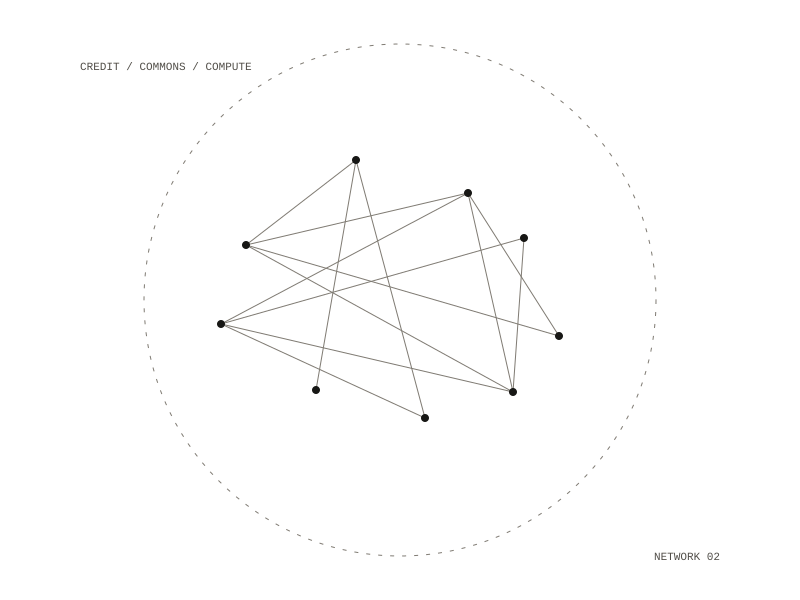

22 / project
Compute Club
A cooperative interface for shared compute
A cooperative interface for using language models on shared compute. Members run agents and harnesses, build apps, and contribute apps, archive material and reviewed AI knowledge back to a commons — earning credits they spend on compute.

The four surfaces
- Dashboard — personal: budgets shown remaining-first, a live active-agents panel with pause and kill and cost, usage charts, storage, projects, contributions and credits.
- Commons — community: a searchable registry of apps, archive and AI knowledge, each with provenance; knowledge carries a confidence and a review gate; governance proposals.
- Workspace — one multi-pane build environment: chat, harness runner, editor, terminal, logs.
- Account & Secrets — SSH keys, secrets vault, profile, credits and billing, privacy defaults.
Status
A real frontend with fully mocked data behind a swappable API layer. There is no real backend, but the architecture is shaped so one can drop in.
Repository — private
All work